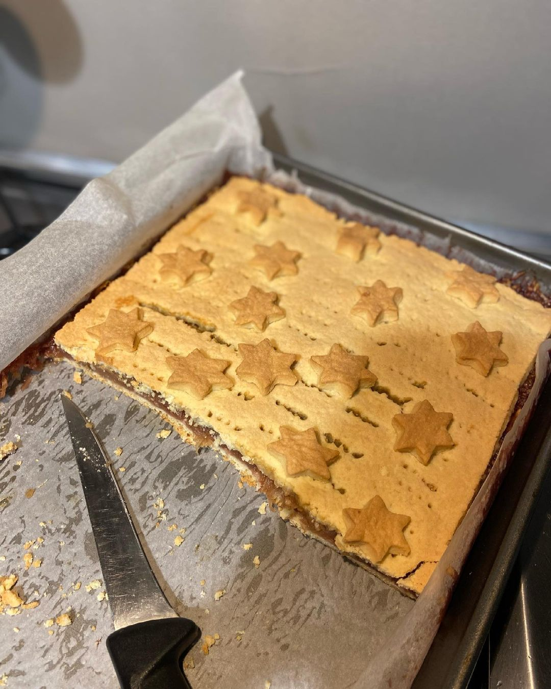

nedeľná klasika 😃 jablkové pite
.
.
polovica už zjedena 😂🙈
#jablkovykolac #jablkovepite #nedela #weekendvibes #weekendmood
.
.
.
.
.
.
500g hladkej muky
250g masla
150g práškového cukru
1 kypriaci prášok
2ks vajíčok
štipka soli
jablka, cukor, škorica podľa chuti
pikantnejši džem
Postup: všetky suroviny na cesto zmiesat na vláčnu nelepivu hmotu a dať ma chvíľku do chladničky
jablka očistiť, nastruhat a dochutit
cesto rozdeliť na dve polovice, vyvalkat na veľkosť plechu, dať na plech popichat vidličkou, natrieť džemom, ďalej dáme jablka a na vrch zvyšok cesta podľa fantázie
pečie sa cca 40 na 180 C
Dobrú chuť !